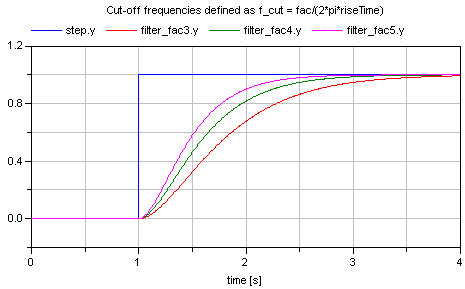

FilterWithRiseTimeDemonstrates to use the rise time instead of the cut-off frequency to define a filter |
|
Diagram
{kind=link}
Information
This information is part of the Modelica Standard Library maintained by the Modelica Association.
Filters are usually parameterized with the cut-off frequency. Sometimes, it is more meaningful to parameterize a filter with its rise time, i.e., the time it needs until the output reaches the end value of a step input. This is performed with the formula:
f_cut = fac/(2*pi*riseTime);
where "fac" is typically 3, 4, or 5. The following image shows the results of a simulation of this example model (riseTime = 2 s, fac=3, 4, and 5):
Since the step starts at 1 s, and the rise time is 2 s, the filter output y shall reach the value of 1 after 1+2=3 s. Depending on the factor "fac" this is reached with different precisions. This is summarized in the following table:
Filter order Factor fac Percentage of step value reached after rise time 1 3 95.1 % 1 4 98.2 % 1 5 99.3 % 2 3 94.7 % 2 4 98.6 % 2 5 99.6 %
Parameters (2)
| order |
Value: 2 Type: Integer Description: Filter order |
|---|---|
| riseTime |
Value: 2 Type: Time (s) Description: Time to reach the step input |